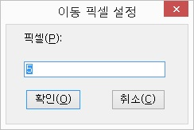

Ⅶ-3. 환경 설정
Ⅶ-3-2. 키 레이블 설정
키 레이블이란, 조합키나 특정 키에 이름을 붙이는 기능으로, 해당 키가 눌렸을 때 이름을 음성출력함으로써 정확한 키조작을 도와주는 기능입니다.
예를들면, 키 레이블 설정에서 'CTRL-C=복사'라고 지정했다면 <Ctrl-C> 키를 누를 때 '복사'라고 음성출력을 해 줍니다.
1. 키 레이블 설정방법
① 센스리더의 [환경설정]->[키 레이블 설정] 메뉴를 실행합니다.
② 대화상자가 열리면 목록에서 팝업키를 눌러 [추가]를 선택합니다.
③ <키 캡처> 버튼을 클릭합니다.
④ 레이블을 등록할 키를 누릅니다. 조합키나 문자키 모두 가능합니다.
예: 'CTRL-C', 'l'
정상적으로 키입력을 했을 경우 키값에 누른키가 표시됩니다.
⑤ 내용 편집창을 선택하여 원하는 문자열을 입력합니다.
예: '복사', '파일 열기'
⑥ '확인' 버튼을 클릭합니다.
* 정상적으로 등록이 됐다면 키레이블 목록상자가 나타납니다.
* 키값이 없거나 내용이 없을 경우에는 오류가 발생하고 키 레이블 설정 대화상자로 돌아갑니다.
* 이미 존재하는 키라면 이전것을 교체할것인지 물어옵니다.
⑦ 다시 '확인' 버튼을 눌러 키 레이블 대화상자를 닫습니다.
{{2. 키 레이블 삭제하기}}
① 센스리더의 [환경설정]->[키 레이블 설정] 메뉴를 실행합니다.
② 지우고자 하는 키레이블을 선택하고 <DEL>키 또는 팝업키를 눌러 [삭제]를 선택합니다.
③ '삭제 확인' 대화상자가 나타나면 '예' 버튼을 선택하여 삭제를 확인합니다.
④ '확인' 버튼을 눌러 대화상자를 닫습니다.
{{3. 키레이블 변경하기}}
① 센스리더의 [환경설정]->[키 레이블 설정] 메뉴를 실행합니다.
② 변경하고자하는 키레이블을 선택합니다.
③ 팝업키를 눌러 [변경]을 선택합니다.
④ 내용 편집창에 변경하고자 하는 내용을 적습니다.
예: '복사입니다'
⑤ '확인' 버튼을 누릅니다.
⑥ 다시 '확인' 버튼을 눌러 '키 레이블' 대화상자를 닫습니다.
Ⅶ-3-3. 커서 지연 시간 설정
커서 지연시간은 에디터에서 캐럿의 동작과 화면 스크롤이 동시에 일어날 때 이전 내용을 다시 읽어주는 현상이 발생할 수 있기 때문에 이를 방지하기 위해 일정한 시간만큼 기다리는 것을 의미합니다. 지연 시간은 1/100초 단위로 설정할 수 있으며 보통 20에서 30 정도면 무리가 없습니다.
만일, 문서편집기 등에서 화살표 이동시 이전줄을 자꾸 읽을 경우 커서 지연시간을 10-20정도 늘려주면 됩니다.
커서지연시간 설정 방법
① 센스리더의 [환경설정]->[커서지연시간 설정] 메뉴를 실행합니다.
② '지연시간 편집창'에 1부터 100 사이의 숫자를 입력합니다.
③ '확인' 버튼을 눌러 설정을 적용합니다.
Ⅶ-3-4. 이동 줄 설정
이동줄이란 읽기포인터를 사용하여 화면을 읽을 때 현재 위치부터 상하로 얼마만큼 움직일지에 대한 범위를 의미합니다.
센스리더의 기능 '이동줄 위로', '이동줄 아래로'를 사용하여 특정 줄 수만큼 화면의 내용을 건너뛰어가면서 읽을 수 있습니다. 화면의 내용이 많을 경우 내용을 빨리 찾기 위해서는 이 기능이 반드시 필요합니다. 각각의 단축키는 키패드의 <PGUP>와 <PGDN> 입니다.
이동줄 설정 방법
① 센스리더의 [환경설정]->[이동줄 설정] 메뉴를 실행합니다.
② 줄수 편집창에서 1부터 20 사이의 숫자를 입력합니다. 1-20 사이의 수보다 큰 수를 입력하게 되면 에러 메세지가 출력되고 다시 '이동줄 설정' 대화상자로 돌아갑니다.
③ '확인' 버튼을 누릅니다.
Ⅶ-3-5. 이동 픽셀 설정
이동 픽셀은 센스리더의 '픽셀단위 위로 이동', '픽셀단위 왼쪽으로 이동', '픽셀단위 오른쪽으로 이동', '픽셀단위 아래로 이동' 기능 사용시 이동할 픽셀수를 의미합니다. 각각의 단축키는 <Alt-Shift-키패드 위/왼쪽/오른쪽/아래 화살표> 키이며, 이동할 때 X, Y좌표의 변화를 음성으로 알려줍니다.
이 기능은 마우스 포인터를 사용하여 화면의 특정 부분에 접근할 수 없을 때 사용하는 기능입니다.
이동픽셀 설정 방법
① 센스리더의 [환경설정]->[이동픽셀 설정] 메뉴를 선택합니다.

② 픽셀 편집창에 1-100 사이의 수를 입력합니다. 1-100사이의 수치보다 큰 수가 입력되면 오류가 발생하고 '이동픽셀 설정' 대화상자로 돌아갑니다.
③ '확인' 버튼을 클릭하여 설정을 적용합니다.
Ⅶ-3-6. 공백 문자 간격 설정
공백문자 간격이란, 글자와 글자 사이의 떨어진 픽셀수를 의미합니다.
공백문자간격 설정이 필요한 이유는, 영문 표기시에 'I' 글자가 너무 작은 폭을 가지기 때문에 다음 글자와의 간격이 많이 떨어지게 되며 이럴 경우, 센스리더는 붙어있는 글자라 할지라도 떨어진 글자로 판단하여 출력하는 현상이 발생하기 때문입니다.
예를들어, 'internet'를 'i nternet'로 읽게 됩니다. 이런 현상이 발생하면, 공백문자 간격을 넓게 해주면 정상적으로 'internet'로 읽게 됩니다.
또한 이야기멀티에서는 단어와 단어 사이에 'SPACE'를 넣는 게 아니라 특정 픽셀만큼 띠워서 화면에 출력을 하게 됩니다. 이럴 경우, 공백문자 간격을 적당히 넣어주면 단어읽기나 줄읽기에서 자동으로 띠워서 처리를 하여 편리하게 사용할 수
있습니다.
공백문자간격 설정 방법
① [환경설정]->[공백문자간격 설정] 메뉴를 실행합니다.

② '간격 편집창'에 1-100사이의 픽셀수를 넣습니다.
만약 1-100보다 큰 수치가 입력이 되면 오류가 발생하고 공백문자간격 설정 대화상자로 돌아가게 됩니다.
③ <TAB> 키를 눌러 '확인' 버튼을 클릭합니다.
** 센스리더를 설치시 기본값은 13이며 공백문자에 문제가 있을시 변경하여 이용하시기 바랍니다.**
Ⅶ-3-7. 세부 설정
센스리더의 세부 환경을 설정하는 메뉴입니다. 세부설정은 목록상자 형태로 구성되어 있으며, 설정값을 변경하기 위해서는 해당 항목에 위치한 후, <Space> 키를 눌러주면 됩니다. 세부 설정의 기능들은 대부분 기능키로 지정되어 있어 간편하게 토글이 가능합니다.
세부 설정의 자세한 목록과 기능은 다음과 같습니다.
| 기능 | 설명 |
|---|---|
| 포커스 자동 추적 선택/해제 | 포커스 자동추적이 선택되어 있을 때, 포커스가 발생하면 포커스된 객체 위치로 뷰포인터가 자동으로 이동을 하게 됩니다. |
| 이동줄 읽기 전체|왼쪽|오른쪽|단어 | 읽기 포인터를 사용하여 화면을 줄단위로 읽을 때 현재 포인터 위치의 전체, 왼쪽만, 오른쪽만, 현재위치 단어만을 읽을 수 있게 하는 기능입니다. 기능 '이전줄로', '다음줄로'등등 ‘Y’좌표가 변화하지 않는 읽기 포인터 기능에서 모두 적용이 됩니다. PC통신 등에서 목록을 읽을 때 매우 유용합니다. |
| 마우스 자동읽기 선택/해제 | 마우스 자동읽기를 선택하면 실제 마우스를 이동했을 경우, 그 위치의 윈도우 현재줄을 읽어주게 됩니다. 전맹의 경우는 별로 사용할 필요가 없지만 약시인 경우에는 유용하게 사용할 수 있는 기능입니다. |
| 화면 변화 읽기 모두|하일라이트|바뀐글자읽기|읽지않기 | 화면 변화 읽기는 현재 선택된 윈도우 범위에 적용이 되며, 윈도우 범위는 읽기 포인터를 사용하여 읽을 때에도 범위의 제약을 받게 됩니다. 범위는 전체, 활성 윈도우, 클라이언트 영역, 사용자 윈도우, 포커스 윈도우가 있습니다. 화면 변화 읽기는 이 범위에 따라 모두 읽기, 하일라이트 읽기, 바뀐글자 읽기, 읽지 않기 등으로 나뉩니다. |
| 델키읽기 지운글자읽기/지운글자 다음읽기 | 에디터를 사용하여 편집을 할 경우 'DEL'키를 눌러 글자를 지울 때에 현재 지워지는 글자를 읽을 것인지, 지워진 글자 위치에 오는 글자를 읽을 것인지를 선택합니다. |
| 캐럿 이동줄 읽기 전체|왼쪽|오른쪽|단어 | 이동줄 읽기와 같은 동작원리이며, 캐럿을 움직여서 줄단위로 읽을 때 적용됩니다. |
| 입력문자 읽기 키보드로|화면으로|읽지않기|무시 | 키보드를 눌러서 문자키 입력시에 읽기 방법을 설정합니다. 기본값은 키보드로 읽기 입니다. 키보드로 읽기: 키보드로 들어오는 글자를 아무런 여과과정없이 읽어 줍니다. 화면으로 읽기: 캐럿이 존재하는 편집창에서만 사용할 수 있으며 글자 입력시 키보드를 읽는 것이 아니라 화면에 써지는 내용을 읽게 됩니다. 이 기능은 시각장애인들이 많이 사용하는 이야기멀티, 한글, XP에서의 워드패드 5.0, XP에서 오피스 XP 워드를 사용할 때 적용하면 편합니다. 이들 프로그램에서는 자판상태가 한글임에도 불구하고 키입력시 영문으로 음성이 출력됩니다. 이 경우 화면으로 읽기를 해 놓으면 한글 입력시에도 정확한 내용을 읽어주어 프로그램을 올바르게 사용할수 있습니다. 읽지않기: 키입력을 읽어주지 안습니다. 무시: 키입력시 음성출력도 하지 않고 다른 음성이 출력되는 것을 정지시키지도 않습니다. 채팅이나 메신저에서 상대의 메세지를 들으면서 입력을 할 수 있어 매우 편리합니다. |
| 입력 한자 획수 읽기 선택/해제 | 한자 입력시 한자의 후보 목록을 읽을 때 획수를 포함하여 읽을지 여부를 선택합니다. |
| 암호 입력 *로 읽기 선택/해제 | 암호 입력 항목을 *로 읽을지 여부를 선택합니다. |
| 숏컷읽기 선택/해제 | 숏컷을 읽을 것인지 여부를 선택합니다. |
| 엑셀러레이터 읽기 선택/해제 | 엑셀러레이터 키를 읽을 것인지 여부를 선택합니다. |
| 컨트롤 종류 읽기 선택/해제 | 컨트롤을 읽을 것인지 여부를 선택합니다. 컨트롤이란, '메뉴항목', '목록', '트리뷰', '버튼' 등등의 윈도우에서 사용하는 일반적인 컨트롤을 의미합니다. |
| 툴팁 읽기 선택/해제 | 마우스 포인터가 위치한 곳의 툴팁을 읽을 것인지 여부를 선택합니다. |
| 대화상자 자동읽기 읽지 않기/현재 화면으로 읽기/객체 탐색 모드로 읽기 | 대화상자 자동 읽기 기능을 통해 화면에 표시되는 대화상자를 현재 화면으로 읽을지, 읽지 않을 것인지, 객체 탐색 모드를 통해 읽을지를 선택 합니다. |
| 키레이블 읽기 선택/해제 | 환경설정의 키레이블 설정으로 등록한 키레이블을 읽을 것인지 여부를 선택합니다. |
| 목록항목 레이블된 그래픽 읽기 선택/해제 | 목록 항목의 그래픽이 있을 경우 그래픽에 레이블이 지정되어 있다면 읽어주는 기능입니다. 이 기능은 'MSCONFIG'의 시작프로그램 페이지텝 안에 있는 그래픽 항목들에서 사용할 수 있습니다. 그래픽에 '선택/해제'라는 레이블을 붙이고 방향키를 움직이면 목록의 선택여부를 확인할 수 있습니다. 이 기능은 'MSCONFIG' 외에 여러 곳에서 사용 가능합니다. |
| 그래픽 읽기 레이블된 그래픽 읽기|모두 읽기|읽지않기 | 읽기 포인터를 사용하여 화면을 읽을 때 그래픽들을 어떻게 읽을 것인지를 결정합니다. 레이블된 그래픽 읽기는 그래픽에 레이블을 등록한 그래픽들만 읽습니다. 모두 읽기는 레이블된 그래픽은 레이블명으로 아닌 것은 그래픽(고유번호)로 읽어주게 됩니다. 예: '중지', '그래픽 135' 읽지않기는 레이블된 그래픽뿐만 아니라 모든 그래픽들을 읽지 않게 됩니다. |
| 빈줄 메세지 알림 선택/해제 | 편집창에서 캐럿을 중심으로 편집을 하거나 가상커서를 이용하여 문서를 읽는 경우 빈줄이 있으면 읽을 것인지 여부를 결정합니다. |
| 캐럿 기능시 포인터 이동 선택/해제 | 캐럿 기능을 사용하여 편집창을 읽을 때 읽기 포인터가 캐럿 기능의 위치로 이동할 것인지 아닌지를 결정합니다. 이 기능을 사용하면 읽기포인터의 시작위치가 캐럿의 위치가 됨으로 편집창에서 유용하게 읽기포인터를 이용할 수 있습니다. |
| 시스템 하일라이트 사용 선택/해제 | 윈도우에 등록된 기본적인 하일라이트를 사용할 것인지 아닌지를 결정합니다. 화면 변화 읽기의 하일라이트 읽기가 선택되었을 때 적용됩니다. |
| 가상커서 자동사용 선택/해제 | 가상커서가 사용되는 프로그램이 실행되면 자동적으로 가상커서를 사용할 것인가 여부를 설정합니다. |
| 항목 개수 알림 선택/해제 | 항목에서 현재 항목 위치와 전체 항목수를 읽을 것인지 아닌지를 선택합니다. 선택되어 있다면 '3/10'과 같은 방식으로 읽게 됩니다. |
| 항목 개수 뒤에 읽기 선택/해제 | 항목의 개수를 가장 뒤에 읽을 것인지를 선택합니다. 선택되어 있다면, 탐색기의 경우 폴더명이나 파일명, 크기, 만들어진 날짜 등의 정보 출력 후 마지막에 항목 개수를 읽어주고, 해제되어 있다면 폴더명이나 파일명 다음에 항목 개수를 읽어주게 됩니다. |
| 자동 시간 알림 선택/해제 | 도구 메뉴의 자동시간알림이 선택되어 있을 때 이것을 알려줄지 여부를 선택합니다. 만일 도구/자동 시간 알림 설정에서 시간알림이 선택되어 있더라도 이 항목이 해제되어 있으면 시간마다 자동시간을 알려주지 않습니다. |
| 프로그레스 자동 읽기 선택/해제 | 인터넷에서 페이지가 열릴 때나 다운로드 대화상자, 프로그램 설치 대화상자 등에 표시되는 진행 상황을 자동으로 읽을 것인지 선택합니다. |
| 들여쓰기 읽기 = 해제 | 문서를 작성할 때 텝 문자나 스페이스 문자 등 들여쓰기 문자를 자동으로 읽을 것인지를 선택합니다.. |
Ⅶ-3-8. 문자 인식 설정 (센스리더 더 넥스트에 국한)
① 센스리더의 [환경설정] - '문자 인식 설정' 메뉴를 실행합니다.

문자인식 설정 대화상자를 통해 "문자인식모드 활성화", "인식 언어", "인식 해상도", "소리 끄기"등의 설정이 가능 합니다.
대화상자의 설정을 통해 한번에 설정값을 변경할 수 있으며 각각의 옵션값은 다음과 같습니다.
| 옵션 | 설명 |
|---|---|
| 문자 인식 모드(O) 체크상자 | 문자인식 모드를 선택 / 해제할 수 있으며 스페이스바를 이용하여 선택, 해제할 수 있습니다. (기능키 "Ctrl + Alt + Shift + NP-(대시)와 동일) |
| 인식 언어(L) 목록상자 | 문자인식 모드에서 사용되는 기본 언어를 지정할 수 있으며 기본값은 "한국어"로 설정되어 있습니다. 상, 하키를 이용하여 기본 언어를 변경할 수 있으며 별도의 선택과정은 필요하지 않습니다. |
| 인식 해상도(R) 목록상자 | 문자인식모드에서 사용되는 해상도를 설정할 수 있으며, 기본 해상도는 300DPI로 설정되어 있습니다. 상, 하키를 이용하여 해상도를 변경할 수 있으며 별도의 선택과정은 필요하지 않습니다. |
| 해제 소리 끄기(M) 체크상자 | 문자인식모드를 이용하여 화면을 인식하는 과정 중 발생하는 효과음을 선택 / 해제할 수 있습니다. 스페이스바를 이용하여 선택, 해제가 가능하며, 선택시 효과음은 출력되지 않습니다. |
각각의 설정항목은 Tab키를 이용하여 이동할 수 있으며 설정이 완료된 경우 "확인"버튼에서 앤터키를 눌러 설정을 완료하거나, "취소"버튼을 눌러 설정값을 저장하지 않고 취소가 가능 합니다.